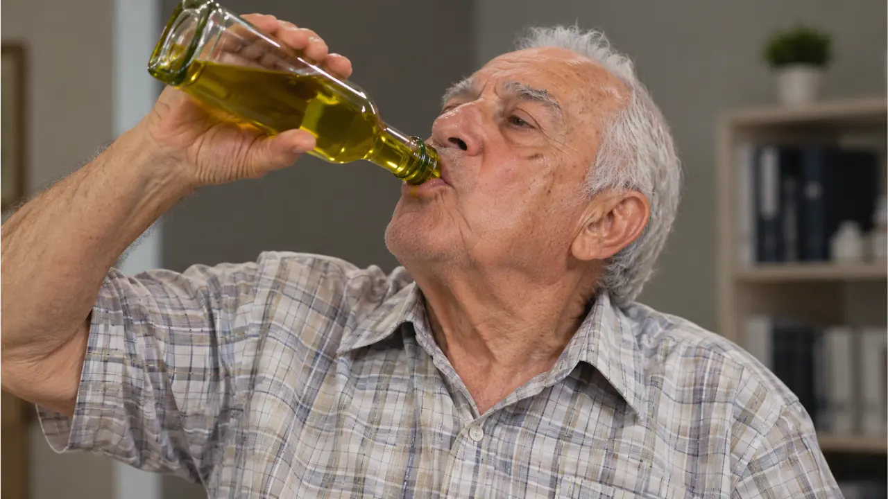

Starodávný přírodní mechanismus znovu objevený českými vědci — a proč o něm Váš lékař mlčí.
Pokud je vám přes 60 let a žijete s diabetem nebo vysokou hladinou cukru, pravděpodobně ten pocit znáte: únava po jídle, ranní mlha v hlavě, nekonečný seznam věcí, kterým se musíte vyhýbat. Roky Vám říkali, že musíte svůj stav kontrolovat — ne řešit.
Ale existuje starodávný, přírodní mechanismus, který čeští vědci znovu objevili a který může pomoci Vašemu tělu znovu získat ztracenou rovnováhu. Tajemství, které moderní medicína ignorovala po desetiletí, je nyní konečně dostupné — pokud víte, kde hledat.
Odpověď je jednoduchá: toto přírodní řešení nelze patentovat. Nevytváří zisky pro farmaceutické společnosti. A proto neexistuje žádná motivace financovat jeho výzkum ani informovat pacienty. Systém byl nastaven tak, aby Vás udržel v závislosti na lécích — ne aby Vám pomohl problém vyřešit u kořene.
Toto není nedosažitelný sen. Je to konkrétní možnost pro tisíce lidí, kteří už tuto metodu objevili. A nyní je dostupná i Vám.
„Zlatá Tekutina" — přírodní esence předávaná po generace, jejíž účinky věda teprve začíná chápat.
V centru tohoto objevu stojí přírodní prvek — skutečná „Zlatá Tekutina" — jejíž existence se dědila po generace. Není to lék, nemá vedlejší účinky a nevyžaduje vyčerpávající diety. Tato esence, pokud se správně používá, působí přímo na buňky a reaktivuje jejich schopnost efektivně zpracovávat cukr.
Nezávislé studie ukázaly, že tato tekutina může pomoci stabilizovat hladinu cukru v krvi a zlepšit celkový zdravotní stav. Je to, jako by Vaše tělo dostalo impulz, aby opět fungovalo tak, jak má.
Pokud Vás už unavují prázdné sliby a dočasná řešení, pokud chcete konečně vyřešit kořen problému a ne jen symptomy — pak musíte vidět toto video. Odhalí všechny detaily o tom, jak může tato „Zlatá Tekutina" transformovat Vaše zdraví a vrátit Vám svobodu, o které jste si mysleli, že jste ji navždy ztratili.
Zdarma · Dostupné po omezenou dobu